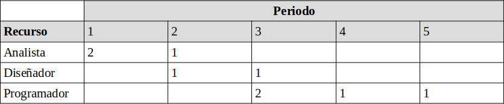
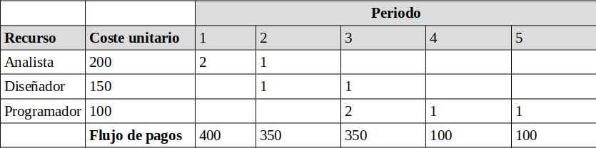
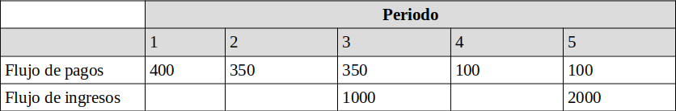
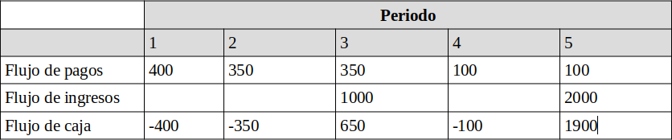
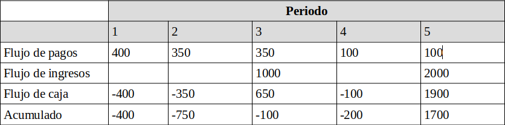
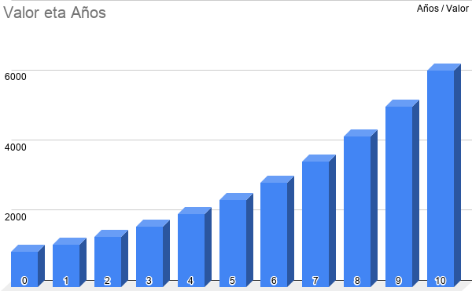
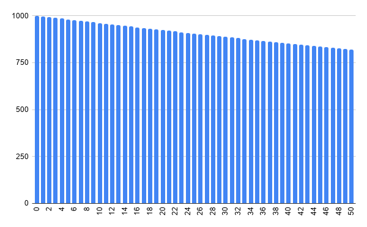

Evaluación Económica
Mikel Egaña Aranguren
Objetivo
Ya tenemos la planificación temporal del proyecto:
- ¿Qué se hará?
- ¿Quién lo hará?
- ¿Cuándo lo hará?
- ¿Qué recursos son necesarios?
Objetivo
Necesitamos saber:
- ¿Cuanto costará?
- ¿Cómo se aplicará el recurso "capital"?
¿Por qué?
- El dinero es importante en el mundo empresarial
- Nuestros proyectos viven en ese contexto
- Las empresas tienen muchos proyectos pendientes, el coste es un criterio de selección
Punto de partida
- Disponemos de la programación del proyecto
- Disponemos de la aplicación de recursos en cada instante
Estudio ecónomico
- Cálculo de flujo de caja
- Estudio financiero
Cálculo de flujo de caja
- Valoración unitaria del coste de cada recurso
- Cálculo del flujo de pagos
- Cálculo del flujo de ingresos
- Cálculo del flujo de caja
- Cálculo del flujo de caja acumulado
Estudio financiero
- Volumen de fondos a comprometer
- Actualización del flujo de caja
Costes de proyecto
- Directos: se pueden asignar de forma clara al proyecto (Horas trabajadas, fungibles consumidos, ...)
- Indirectos: es difícil evaluar en qué medida han aportado valor al proyecto, suelen ser costes fijos de la empresa (Electricidad, alquiler, telefonista, ...)
Valoración unitaria del coste de cada recurso
- Se tiene que repercutir en los proyectos todos los costes:
- Los costes directos son fáciles de aplicar
- Los costes indirectos se suelen repercutirponderándolos con los costes directos
- Así tendremos una valoración media del coste de los informáticos y no sólo su coste directo
Cálculo del flujo de caja en un proyecto
- Empezamos por fijar la periodicidad de los pagos: días, semanas, meses.
- Agrupamos el uso de recursos por períodos (tabla de doble entrada): recurso, períodos
Cálculo del flujo de caja en un proyecto

(Por ejemplo: en el período 3 necesitamos 1 diseñador y 2 programadores)
Flujo de pagos
En cada periodo se acumula el total de recursos multiplicado por su coste

Flujo de ingresos
Conjunto de ingresos percibidos por la empresa que desarrolla el proyecto, como consecuencia de éste
Obtención del flujo de ingresos
En cada periodo se acumula el total de ingresos percibidos (del cliente, subvenciones...)

(suponemos que hemos recibido 1000€ en el periodo 3 y 2000€ en el periodo 5)
Obtención del flujo de caja
Se obtiene sustrayendo del flujo de ingresos el flujo de pagos
Se llama flujo de caja por poderse representar mentalmente como el dinero que hay en la caja virtual del proyecto

(Flujo de caja = Flujo de ingresos - Flujo de gastos)
Obtención del flujo de caja acumulado
Se obtiene acumulando flujos de caja
Es útil para ver los niveles de endeudamiento y ver si se pueden afrontar

Estudio financiero
El dinero es difícil de conseguir en la empresa
Cuando se utiliza siempre se le compara con el coste de oportunidad
De modo que hay que observar el proyecto desde dos puntos de vista:
- Volumen de fondos que compromete
- Valor actualizado del flujo de caja
Volumen de fondos a comprometer
Negocio:
- Pagar 1.000.000€/semana durante un año,
- Obtendremos 200 millones de € de aquí a un año,
- El riesgo es nulo
A todos nos parece claro el negocio
¿Pero es posible? Es de difícil realización con esas condiciones.
Rentabilidad de un proyecto
Para poder comparar la rentabilidad de los proyectos, es necesario que todos se encuentren en las mismas condiciones:
- Métodos estáticos:
- Plazo de recuperación simple
- Rendimiento de la inversión (ROI)
- Métodos dinámicos:
- Criterio del Valor Actual Neto
- Criterio de la Tasa Interna de Rendimiento (TIR)
Rentabilidad de un proyecto
Plazo de recuperación simple:
- Número de períodos que tarda en recuperarse la inversión
- En general el plazo de recuperación (r) es el menor valor que cumpla:
\[ K \leq \sum_{j=1}^r Q_j\]
- K: la inversión realizada; Qj: flujo de caja en el período j
Rentabilidad de un proyecto
Dado el siguiente proyecto de inversión, calcula el plazo de recuperación simple:
- Inversión: 1000
- 1er año: Q1 = 600
- 2º año: Q2 = 550
- 3er año: Q3 = 600
Resultado:
- ¿1 año? : ¿1000<=600? NO
- ¿2 años?: ¿1000<=600+550? SÍ
Rentabilidad de un proyecto
Rendimiento de la inversión (ROI):
- Es el beneficio medio generado (por periodo) por el proyecto expresado en porcentaje y en relación a la inversión:
\[ ROI = \frac{\sum_{j=1}^n Q_j - K}{n \times K} \times 100 \]
- K: la inversión realizada; Qj: flujo de caja en el período j; n: el número de periodos
Rentabilidad de un proyecto
Calcula el ROI para este proyecto de inversión:
- Inversión=1000
- 1er año: Q1=-200
- 2º año: Q2=600
- 3er año: Q3=550
- 4º año: Q4=800
Rentabilidad de un proyecto
Resultado
\[ ROI = \frac{(-200 + 600 + 550 + 800) - 1000}{4 \times 1000} \times 100 = 18,75% \]
El valor del dinero
¿Quien me presta 100 Euros y se los reintegro dentro de un año?
¿Quien me presta 100 Euros y le reintegro 300 dentro de un año?
Evidentemente, disponer del dinero hoy tiene un coste
Los métodos estáticos no lo tienen en cuenta, los dinámicos sí
Actualización de un importe en un periodo cualquiera
Para actualizar el valor del dinero:
\[ Futuro = Actual \times (1+i)^n \]
\[ Actual = Futuro \times (1+i)^-n \]
i: tasa de interés en el periodo (en tanto por uno); n: número de periodos transcurridos
La tasa de interes "i"
Hacemos un depósito en un banco, en el que se nos marca un retorno por período, así:
- Si deposito 100 Euros hoy (Actual),
- Se me reintegran 110 Euros en un año (Futuro)
La tasa de interes "i"
Llamamos interés a la razón entre el valor futuro y el valor actual:
\[ i = {Futuro \over Actual} = {110 \over 100} -1 = 0,1 \]
En %: el 10% (en un año)
El valor de 1000 Euros actuales a un interés del 20%

Valor de 1000 Euros vistos desde el momento actual (al 0,4% semanal)

Rentabilidad de un proyecto
Tasa Interna de Rendimiento (TIR)
Se obtiene la tasa, r, que cumple:
\[ K = \sum_{j=1}^n {Q_j \over (1+r)^j} \]
Rentabilidad de un proyecto
Tasa Interna de Rendimiento (TIR)
Serán viables los proyectos con r > tipo de interés
Cuanto mayor sea r, mejor será la inversión
Hay que adaptarla con flujos de caja negativos (no lo veremos)
Rentabilidad de un proyecto
Tasa Interna de Rendimiento (TIR)
Calcula el TIR para el siguiente proyecto de inversión:
- Inversión=100
- 1er año: Q1=20
- 2º año: Q2=160
Rentabilidad de un proyecto
Resultado:
\[ 100 = {20 \over 1+r } + {160 \over (1+r)^2} \]
\[ 100(1+r)^2 - 20(1+r) - 160 = 0 \]
\[ r = {20+253,77 \over 200}-1 = 0,369 \]
Rentabilidad de un proyecto
Criterio del Valor Actual Neto (VAN)
Se calcula con:
\[ VAN=-K+\sum_{j=1}^n{Q_j \over (1+r)^j} \]
El VAN representa la ganancia neta
Si el VAN es mayor que cero, el proyecto es viable
Rentabilidad de un proyecto
Criterio del Valor Actual Neto (VAN)
Calcula el VAN para el siguiente proyecto de inversión:
- Inversión=100
- Tasa de rendimiento:10%
- 1er año: Q1=20
- 2º año: Q2=60
- 3er año: Q3=55
- 4º año: Q4=80
Rentabilidad de un proyecto
Criterio del Valor Actual Neto (VAN)
Resultado:
\[ -100+{20 \over (1+0,1)}+{60 \over (1+0,1)^2}+{55 \over (1+0,1)^3}+{80 \over (1+0,1)^4}=63,73 \]